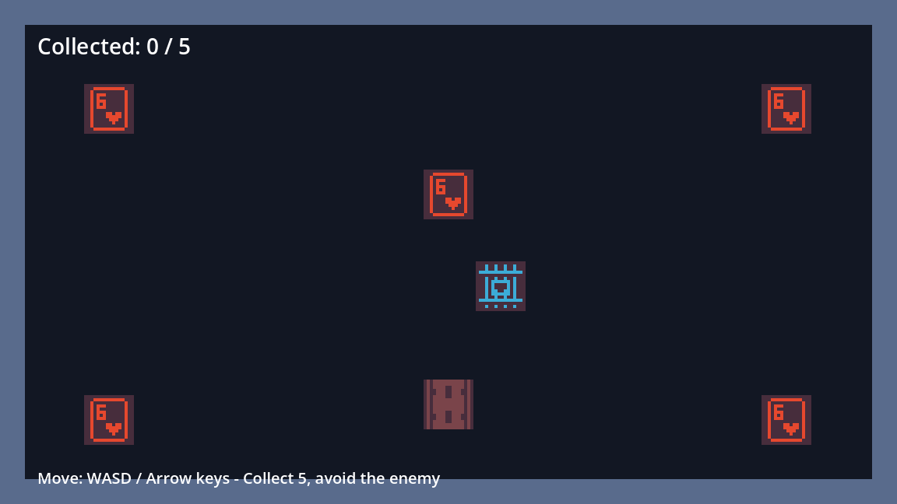

See what’s there.
Read the open scene tree. Inspect nodes, classes and resources. Discover the interface published by your editor.
scene-tree · inspect-nodeOPEN SOURCE / EXPERIMENTAL
Your scripts and AI agents.
Your running Godot editor.
One command line between them.
01 / IN THE EDITOR
Inspect. Author. Run. Observe.
See an agent work through the editor.

A collect-and-dodge prototype authored through the CLI. Timelapse is accelerated. Scripts and assets use ordinary file tools; editor operations go through the plugin.
02 / THE LOOP
Read the open scene tree. Inspect nodes, classes and resources. Discover the interface published by your editor.
scene-tree · inspect-nodeCreate nodes, assign textures and collision shapes, attach scripts and connect signals. Scene edits use Godot’s undo history.
create-node · set-propertyRun the scene, read game logs, capture its viewport and send keyboard or mouse input to the running game.
play · game-log · capture-gameLoopback connection. No engine fork.
03 / YOUR FIRST COMMAND
Build the CLI, install the plugin in a test project, then open that project in Godot with a scene ready.
Documented test target: Godot 4.7.2.
Requires Rust supporting the 2024 edition.
# Build from the repository
git clone https://github.com/indie-hub/godot-cli.git
cd godot-cli
cargo build
# Install in your test project
target/debug/godot-cli install /path/to/project
# Open the project and a scene in Godot, then:
target/debug/godot-cli call status
target/debug/godot-cli call scene-tree04 / GOOD TO KNOW
This is an experimental developer tool. Start in a test project and check the command reference before using it on ongoing work.
This is a separate CLI and plugin for controlling a running editor. It complements the Godot executable’s existing command line.
Scene-edit commands participate in editor undo history. Saving and opening scenes are not undo steps. Play can save scenes; the plugin registers a capture-helper autoload. Input apply writes project settings. The reference documents each command’s effects.
Yes. The editor publishes the command interface and the CLI returns structured results. Game behaviour stays in ordinary scripts. This supports an authoring workflow; it does not promise to generate any game automatically.
The repository documents stock Godot 4.7.2 as the tested engine. Build instructions and current limits live there. Wider engine and platform compatibility is not implied.
HELP SHAPE WHAT COMES NEXT